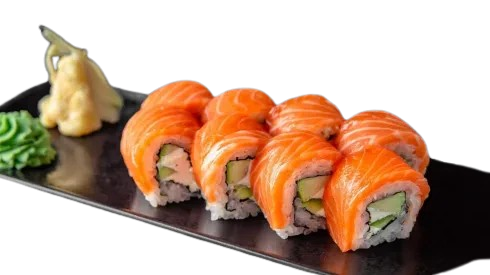

Філадельфія
Філадельфія – це класичний рол із ніжним сиром Філадельфія, соковитим лососем і свіжими інгредієнтами. Подається завжди свіжим та якісним. Ціна: 250 грн
Купити
Філадельфія – це класичний рол із ніжним сиром Філадельфія, соковитим лососем і свіжими інгредієнтами. Подається завжди свіжим та якісним. Ціна: 250 грн
КупитиДракон – це яскравий рол із копченим вугрем, ніжним авокадо та кремовим сиром. Доповнений солодким соусом унагі для створення гармонійного смаку. Ціна: 300 грн
КупитиЗелений дракон – це ніжний рол із кремовим сиром, хрусткими огірками, соковитою креветкою в темпурі та шматочками авокадо зверху.. Ціна: 249 грн!!
Купити
Унагі – це вишуканий рол із копченим вугрем, кремовим сиром, хрустким огірком і соусом унагі. Ніжна текстура і багатий смак ідеально доповнюють один одного. Вибір для справжніх гурманів. Ціна: 300 грн.
КупитиФутомакі – це великі роли, що містять кілька інгредієнтів, загорнутих у водорості норі та рис. Вони зазвичай мають насичений смак і яскравий вигляд. Ціна: 220 грн
КупитиМакі – це класичні ролли з начинкою, загорнутою в рис і норі. Вони можуть бути тонкими (хосомакі) або товстими (футомакі), залежно від кількості інгредієнтів. Ціна: 240 грн
КупитиСашимі – це тонко нарізані шматочки свіжої риби або морепродуктів без рису. Це один із найчистіших способів насолодитися смаком риби, подається з соєвим соусом, васабі та імбирем. Ціна: 240 грн
КупитиЧираші-суші – це страва з рису для суші, поверх якого викладають морепродукти, овочі та інші інгредієнти. Виглядає яскраво, подається у мисці та відрізняється свіжим смаком. Ціна: 240 грн
Купити1399грн
З появою доставки суші Dart Sushi смакові пріоритети містян зміняться у бік гастрономічного задоволення...
Переходьте на сторону смаку разом з рецептами нашого шеф-кухаря.